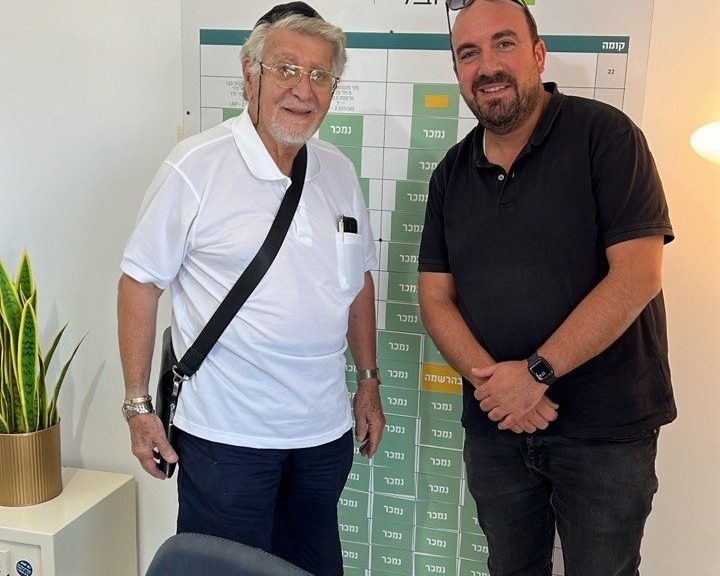
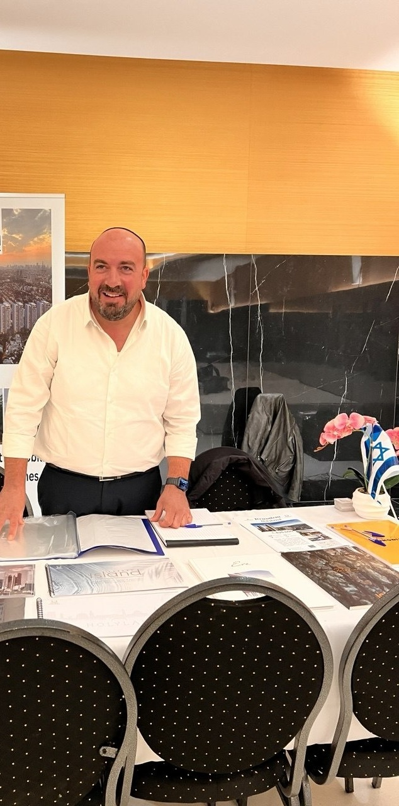

Nossos empreendimentos novos
169 empreendimentos acompanhados · 59 cidades10 anos de experiência em incorporação imobiliária em Israel
Dez anos no mercado imobiliário israelense, a maior parte nas incorporadoras, do lado do vendedor. Sei como um preço é construído, o que de fato se negocia e o que nunca se negocia.
Hoje esse conhecimento trabalha para você, e você não paga nenhuma comissão de imobiliária: sou remunerado pela incorporadora, e você assina pelo preço negociado antes da sua chegada.
Acompanhamos 169 empreendimentos em 59 cidades. Você não compra uma planta numa tela: alguém vai à obra, fala hebraico no stand de vendas e fica com você até a entrega das chaves, advogado e banco incluídos.
A primeira ligação não custa nada e não compromete você com nada.

